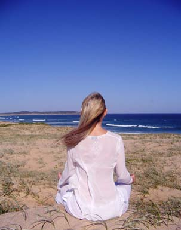

|
Home > Workshops > LBP Level 3 (Atma Spurana Program)
|

|
LBP Level 3 (Atma Spurana Program)
Connect with your Self
Aham Brahmasmi!
Man and all other forms of creation are but a speck of Existence or God. Yet, Existence remains as a whole. This is the ultimate Truth as said in the Upanishads in the following verse:
Om Purnamada
Purnamidam
Purnad purnamudachyate
Purnasya Purnamadaya
Purnamevavasisyate
It literally translates into: 'That' (Existence or God) is whole; 'This' (all forms of creation) is also whole; From 'That', 'This' has come out. Yet, 'That' remains 'That' or whole only.
|
The purpose of man's life is to realise this verse, to realise the Self or the Atman and merge with Existence. Enlightened Masters have realised this and have devised techniques for others to realise it as well. What is standing in the way of man in realising this are the five body sheaths called the koshas. Man's awareness needs to be pulled through these in order to reach the Atman or Self.
The five koshas can be described as below:
- Annamaya kosha - 'Food body'. This outermost body is made up of the food that we eat. This body represents the tangible physical body that we are all familiar with.
- Pranamaya kosha - 'Breath body'. This body is responsible for the breath cycle in us that keeps our whole body alive.
- Manomaya kosha - 'Mental body'. This body represents our mind - our thoughts and emotions.
- Vignanamaya kosha - 'Intelligence body'. This body represents the subtle or Supreme Intelligence in us which can bring about a deeper sense of consciousness and insight into the inner and outer worlds.
- Anandamaya kosha - 'Bliss body'. This innermost body represents unconditional joy that can be felt through communion with Existence or God.
Everyone is aware of the food body and most people operate from this layer. Some strive to become aware of the inner body sheaths by practicing various meditation techniques and yoga methods.
Here, the Master conducts a 2-day weekend workshop, wherein the five koshasare discussed in detail and techniques taught to help pull our awareness through these layers to realise the Self. The Thythreya Upanishad forms the basis of this workshop.
|